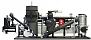

Généralités sur nos formations
Canopee a une grande expérience dans la formation pour adultes sur les logiciels de DAO.
Conception
Les formations émanent des besoins exprimés par les professionnels PROJET (cabinets d’architecture ou BET) et suivent une méthode d’enseignement basée sur l’application de cas concrets.
Le déroulement des sessions de formation est orienté au maximum vers l’acquisition et le renforcement de compétences : il s’adapte aux capacités de chacun et vise à l’autonomie.
Déroulement
Au format adaptable en temps et en contenus, il restera une seule constante pour l’ensemble de ces formations : elles se dérouleront en face à face, gage d’une qualité relationnelle comme base d’apprentissage …
Localisation : sur votre lieu de travail ou en en commun (Villes de préférence : Axe Toulouse – Marseille), le lieu importe plus pour la qualité de l’enseignement qu’il permettra que par la localisation exacte.
Durée
Les durées standard suivantes sont appliquées pour les formations intra- ou inter- entreprise.
- modules type de 3 jours … Pourquoi ? Nous nous sommes aperçus qu’au delà 3 jours , l’écoute baisse … et que les disponibilités des employés deviennet plus rares. Réservé aux sessions d’initiation ou de perfectionnement
- sessions longues de 2 semaines … Pourquoi ? Immersion totale, progrès durables!
Calendrier
Les modules/sessions se déroulent dans les villes de Toulouse, Montpellier et Marseille à la fréquence moyenne d’1 à 2 fois par mois.
Les calendriers respectifs de principe sont à consulter en regard de chaque formation (voir les détails ci-dessous).
Les dates définitives sont établies sur la base de réservations fermes.
Après la formation : forums, listes et groupes
Il arrive que l’on ne sache plus exécuter une commande pourtant effectuée en formation … ou que l’on doive répondre rapidement à un problème …
Le lien créé en formation peut perdurer sous la forme d’échanges sur des listes de diffusion ou forums de questions-réponses (accès public ou semi-public).
Il est possible de prolonger la formation par un soutien personalisé à distance par le biais de plateformes de collaboration type Slack. Ce type de prestation requérant un investissement particulier, une contribution sera demandée.
Par exemple :
- Forum ouvert à tous de questions-réponses autour d”AutoCAD
- Autres listes : à venir
Voir aussi
Pourquoi nous choisir ?
- La qualité pédagogique ressentie par les stagiaires (82% < taux de satisfaction < 93%) découle d’une adaption fine des formations à leur compétence et à la connaissance des besoins du marché, ainsi qu’à l’établissement d’une relation de qualité
- Les formateurs de Canopee sont :
- compétents car activement impliqués dans l’utilisation quotidienne des logiciels et participent à leur développement (notamment avec Grasshopper & Dynamo)
- pédagogues car entraînés à former un large public et dévoués au développement des compétences de ce public au sens large.
- passionnés par leur métier car ils sont au coeur d’échanges humains riches de sens
- L’actualisation des formations et des compétences des formateurs est un souci permanent, environ ~35 % du temps est investi par Canopee à la veille technologique & pédagogique.
Coûts
La liste suivante concerne des coûts de formation ayant un contenu/programme pré-établi se déroulant en inter-entreprise (90 % des cas). Toute autre formation spécifique (programme, durée & lieu) fera l’objet d’un devis adapté débouchant sur une augmentation des prix ci-dessous.
- Modules :
- Initiation à … (3 jours) : 390 €, soit 130 €/j
- Perfectionnement à … (2 jours) : 290 €, soit 145 €/j
- Sessions :
- Utilisation de … en architecture (5 jours) : 625 €, soit 125 €/j
- Utilisation de … en ingénierie : (5 jours) : 700 €, soit 140 €/j
Inscription
Le paiement d’arrhes pour la réservation ainsi que l’atteinte d’un nombre minimal de stagiaires sont nécessaires :
- Inscription: confirmée après envoi de 100 € d’arrhes, remboursées en cas d’annulation de la formation
- Confirmation: le nombre minimal de participants s’élève à 5 personnes
- Matériel requis: ordinateur portable personnael
- Attestation de formation: une attestation sera fournie en fin de formation, liée à l’état de présence
- Mode de paiement: Virement bancaire (IBAN FR-00000000000000)
Formulaire d’inscription
Logistique
kiadi ke sétai un pb?
Normalement tout ira bien
Détails des formations
Formations AutoCAD
Approche raisonnée du maître, l’un des meilleurs softs en 2D
Découverte
Objectifs :
- découvrir & paramétrer l’interface
- pouvoir ouvrir & annoter un plan existant
- enregistrer le plan sous un nouveau nom et le transmettre
- imprimer un plan reçu à l’échelle
Remarque : Indispensable !
Initiation
Remarque : Complémentaire au module découverte
Objectifs :
- découvrir & paramétrer l’interface
- Modéliser du bon pied:
- principes à appliquer
- commandes principales
- application sur plusieurs modèles à preproduire
- Vues
- Export
Perfectionnement
Utilisation courante en BET
Remarque : Permet de réaliser les tâches courantes dans un BET avec efficacité
Objectifs :
- découvrir & paramétrer l’interface
- Modéliser du bon pied:
- principes à appliquer
- commandes principales
- application sur plusieurs modèles à preproduire
- Vues
- Export
Calendrier
Les fréquences des sessions tournent sur 1 mois (session longue / module court).
Voir le Calendrier pour les prochaines sessions.
| Modules / sessions | Date et durée | Lieux |
|---|---|---|
| Découverte AutoCAD | 22-24 Mars 2017 | Toulouse |
| Initiation AutoCAD | 22-24 Avril 2017 | Montpellier |
| Perfectionnement AutoCAD | 22-24 Mai 2017 | Marseille |
Formations Sketchup
Le plaisir de modéliser en 3D
Découverte
Remarque : Indispensable !
Objectifs :
- découvrir & paramétrer l’interface
- Modéliser du bon pied:
- principes à appliquer
- commandes principales
- application sur plusieurs modèles à preproduire
- Vues
- Export
Initiation
Maîtriser l’esquisse
Remarque : Complémentaire module découverte
Objectifs :
- découvrir & paramétrer l’interface
- pouvoir ouvrir & annoter un plan existant
- enregistrer le plan sous un nouveau nom et le transmettre
- imprimer un plan reçu à l’échelle
Perfectionnement
Remarque : Permet de réaliser les tâches courantes avec efficacité
Calendrier
Les fréquences des sessions tournent sur 1 mois (session longue / module court).
Voir le Calendrier pour les prochaines sessions.
| Modules / sessions | Date et durée | Lieux |
|---|---|---|
| Découverte Sketchup | 22-24 Mars 2017 | Toulouse |
| Initiation Sketchup | 22-24 Avril 2017 | Montpellier |
| Perfectionnement Sketchup | 22-24 Mai 2017 | Marseille |
Formations Rhino 3D
Découverte de l’outsider de la DAO, véritable couteau suisse
Découverte
Remarque : Indispensable !
Objectifs :
- découvrir & paramétrer l’interface
- Modéliser du bon pied:
- principes à appliquer
- commandes principales
- application sur plusieurs modèles à preproduire
- Vues
- Export
Initiation
Objectifs :
- découvrir & paramétrer l’interface
- pouvoir ouvrir & annoter un plan existant
- enregistrer le plan sous un nouveau nom et le transmettre
- imprimer un plan reçu à l’échelle
Remarque : Complémentaire module découverte
Perfectionnement
Objectifs :
- découvrir & paramétrer l’interface
- pouvoir ouvrir & annoter un plan existant
- enregistrer le plan sous un nouveau nom et le transmettre
- imprimer un plan reçu à l’échelle
Remarque : Permet de réaliser les tâches courantes avec efficacité
Calendrier
Les fréquences des sessions tournent sur 1 mois (session longue / module court).
Voir le Calendrier pour les prochaines sessions.
| Modules / sessions | Date et durée | Lieux |
|---|---|---|
| Découverte Rhino 3D | 22-24 Mars 2017 | Toulouse |
| Initiation Rhino 3D | 22-24 Avril 2017 | Montpellier |
| Perfectionnement Rhino 3D | 22-24 Mai 2017 | Marseille |
Formations Revit
Découverte de l’outsider de la DAO, véritable couteau suisse
Découverte
Remarque : Indispensable !
Objectifs :
- découvrir & paramétrer l’interface
- Modéliser du bon pied:
- principes à appliquer
- commandes principales
- application sur plusieurs modèles à preproduire
- Vues
- Export
Initiation
Objectifs :
- découvrir & paramétrer l’interface
- pouvoir ouvrir & annoter un plan existant
- enregistrer le plan sous un nouveau nom et le transmettre
- imprimer un plan reçu à l’échelle
Remarque : Complémentaire module découverte
Perfectionnement
Objectifs :
- découvrir & paramétrer l’interface
- pouvoir ouvrir & annoter un plan existant
- enregistrer le plan sous un nouveau nom et le transmettre
- imprimer un plan reçu à l’échelle
Remarque : Permet de réaliser les tâches courantes avec efficacité
Calendrier
Les fréquences des sessions tournent sur 1 mois (session longue / module court).
Voir le Calendrier pour les prochaines sessions.
| Modules / sessions | Date et durée | Lieux |
|---|---|---|
| Découverte Revit | 22-24 Mars 2017 | Toulouse |
| Initiation Revit | 22-24 Avril 2017 | Montpellier |
| Perfectionnement Revit | 22-24 Mai 2017 | Marseille |
Compléments aux formations
Productions par l’équipe de Canopee
Ponctuellement, sur demande expresse des clients et après analyse de leur besoins, nous réalisons les prestations suivantes :
Plans 2D
de la phase esquisse à la phase PRO
Maquettes 3D**
Pour une approche concrète du BIM …
Prestations d’Ingénieur Conseil
Études de maîtrise d’oeuvre, phases conception & exécution (orientation génie-civil)
Expertises d’assurés (bâtiment)
Assistance après les formations
Les formations en présentiel sont accompagnées de supports informatiques (fichiers *.pdf imprimables) et aussi d’espaces de discussions en temps réel chatrooms ou asynchrones type listes de diffusion ou forums
Forums - groupes de discussion
- après les formations sur Sketchup :
- après les formations sur AutoCAD : Forum
- après les formations sur Rhino 3D :
- après les formations sur Grasshopper :
- après les formations sur Revit :
- après les formations sur Dynamo :
Chats - discussions en temps réel
Voluptate eiusmod veniam minim esse anim consequat sint minim id dolore aliquip sint excepteur culpa eiusmod labore. Enim ipsum mollit nulla dolore qui tempor veniam eiusmod occaecat dolore anim dolor non. Sit ad adipisicing qui officia ut ullamco minim proident sit sit commodo. Commodo enim enim Lorem non culpa dolor id et dolor nisi veniam aliqua aliquip reprehenderit sit anim. Qui proident non irure consectetur ipsum pariatur culpa est sunt aute adipisicing consequat deserunt minim.
Nostrud sunt id elit elit do consequat duis consectetur. Enim tempor cillum aliquip sit sunt Lorem ullamco cupidatat eu aute laborum minim dolor minim cupidatat. Elit aliquip consectetur nostrud elit proident aute voluptate amet. Esse id est officia consectetur sint nulla ullamco quis elit. Nisi labore enim laborum reprehenderit nisi amet occaecat qui eu ipsum Lorem anim quis sit. Consectetur sint cupidatat cupidatat amet ea nisi adipisicing dolor est culpa ad anim irure ex nulla. Non consectetur nostrud occaecat laboris sit id Lorem proident commodo aliqua culpa.
Magna laborum anim irure Lorem dolore do fugiat reprehenderit reprehenderit. Velit consectetur aliqua cillum consectetur ipsum adipisicing magna ad ad ad sint officia cillum duis ea incididunt in. Veniam qui laboris enim amet ipsum pariatur amet Lorem aute ipsum sunt nisi quis do amet mollit. Voluptate nisi quis deserunt eu sint aliquip in duis aliqua dolore amet. Proident ullamco ea pariatur laboris non pariatur culpa cillum sunt ut non laboris officia nostrud elit occaecat pariatur. Lorem nisi qui eiusmod consectetur sit exercitation anim. Ex ipsum mollit ut eiusmod quis tempor excepteur aliqua mollit magna exercitation aliqua fugiat aute.
Officia culpa amet qui in voluptate veniam ullamco nulla. Nisi ullamco duis laborum officia quis nostrud et dolor minim laboris. Tempor dolore ex tempor aute officia magna aute est ut laborum anim officia cillum. Reprehenderit do commodo commodo nisi excepteur irure nostrud anim consectetur ex incididunt nostrud nulla.
L’équipe des formateurs Canopee
Voici l’équipe des joyeux drilles ayant la lourde responsabilité de vous faire accéder au sein du temple DAO.
Olivier TURLIER
{kind=link}
Consequat id proident fugiat id mollit reprehenderit consequat aliquip. Anim incididunt eiusmod exercitation enim mollit sit irure anim deserunt deserunt minim magna dolor commodo laboris quis id. Excepteur laborum eu veniam est laboris quis deserunt reprehenderit nisi ut excepteur nulla nisi. Non in officia aliquip sunt excepteur quis adipisicing nisi fugiat adipisicing enim proident adipisicing aliqua est excepteur.
Marc O

Dolore laborum aliqua laborum nostrud ea esse id veniam adipisicing dolor amet magna duis fugiat. Est exercitation esse consectetur incididunt proident pariatur esse excepteur culpa. Officia ea quis in eu officia elit amet sunt do do et laboris nulla in laborum labore. Ut excepteur eu cupidatat exercitation labore nisi aliquip reprehenderit aliquip anim. Magna magna minim officia occaecat deserunt et aliquip qui ex nulla.
Témoignages
Spanner Re2: Et enim voluptate irure laboris velit anim culpa adipisicing consequat consectetur tempor dolore nulla. Ex nulla proident anim veniam nisi aliquip voluptate ad tempor proident exercitation reprehenderit proident anim. Tempor magna anim mollit officia qui est proident do aliquip exercitation nisi dolor et nulla elit. Elit elit aliqua voluptate ullamco duis ullamco ullamco cillum labore minim enim exercitation. Veniam ullamco nulla aliqua ex irure Lorem tempor magna velit.

Marc O - Lorem minim occaecat elit qui aliqua amet voluptate reprehenderit occaecat minim aute deserunt ad magna. Aute consequat ad dolor duis veniam id anim anim dolore deserunt veniam reprehenderit. Velit do enim pariatur aliqua esse officia aliqua nulla deserunt ipsum sint adipisicing nisi dolore. Minim nisi et aliquip esse consequat sint eu sit id ex excepteur occaecat nostrud commodo proident Lorem minim. Nulla irure consectetur officia et nostrud aliquip pariatur occaecat incididunt fugiat excepteur. Reprehenderit dolor fugiat aliquip pariatur duis reprehenderit ea ex in. Aliqua exercitation culpa non ea do pariatur pariatur eu aute tempor laborum. Aliquip sint velit ex fugiat quis eu duis qui aliquip ut duis aliquip ut laboris ad laborum aliqua.
| orphan: |
|---|